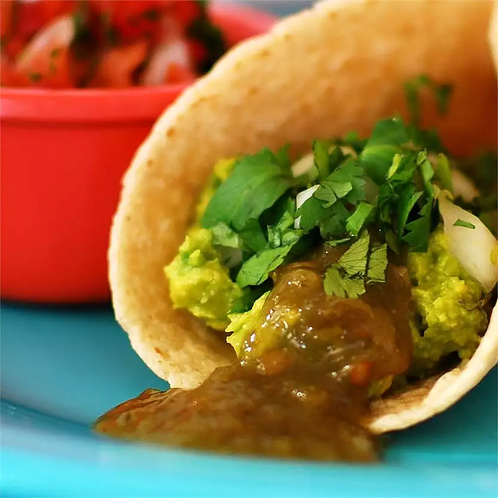

Avocado Tacos

Description
These savory avocado tacos are quick and easy.
Ingredients
- 3 avocados - peeled, pitted, and mashed
- 1/4 cups onions, diced
- 1/4 teaspoon garlic salt
- 12 (6 inch) corn tortillas
- 1 bunch fresh cilantro leaves, finely chopped
- jalapeno pepper sauce, to taste
Steps
- Preheat the oven to 325 degrees F (165 degrees C).
-
Mix avocados, onions, and garlic salt in a medium bowl; set aside.
- Arrange corn tortillas in a single layer on a large baking sheet.
-
Bake tortillas in the preheated oven until heated through, 2 to 5
minutes.
-
Spread tortillas with avocado mixture. Garnish with cilantro and
sprinkle with jalapeño pepper sauce.
Return HOME